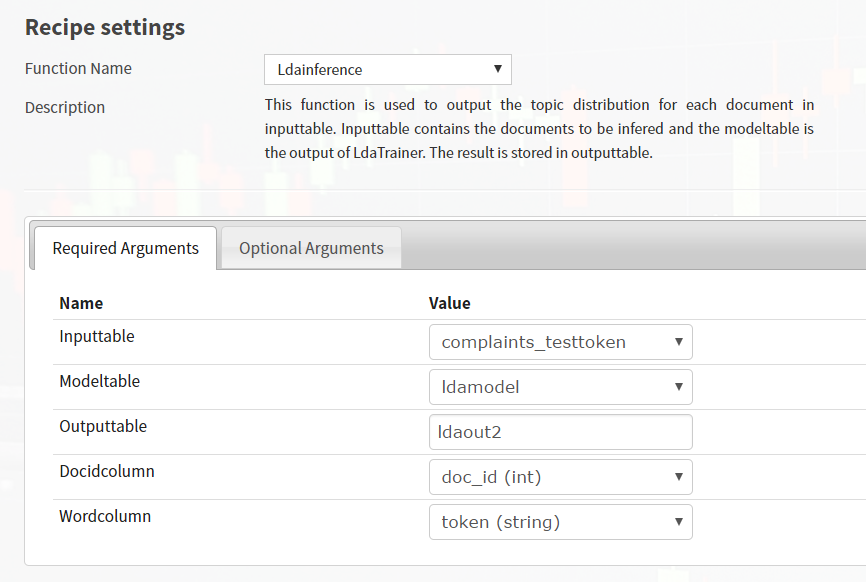

VI. Aster Analytics Plugin Usage
This section assumes that a Dataiku project already exists and input datasets have already been imported. Note that recipes need a non-empty dataset as input to run.
Go to the flow view of the Dataiku project where the recipe is to be created by clicking on the GO TO FLOW button or by clicking on the flow icon in the project menu.

In the Flow view, under Recipe, select desired recipe under Aster Analytics plugin. The recipe names correspond to the different categories of Aster Analytics functions.

In New custom recipe popup, specify the input and output datasets. There can be more than one input dataset, as in the case of multiple-input SQL-MR functions. The output dataset will be stored in the database and schema corresponding to the connection selected in the Store into field. Click on CREATE button when done.

In a category recipe, one can select the most suitable function for manipulating or analysing the input dataset. Configure the chosen SQL-MR recipe (input tables, partition and order attributes, and arguments). Required and optional fields are separated into tabs.

Click on the RUN button or save the recipe settings for later use.